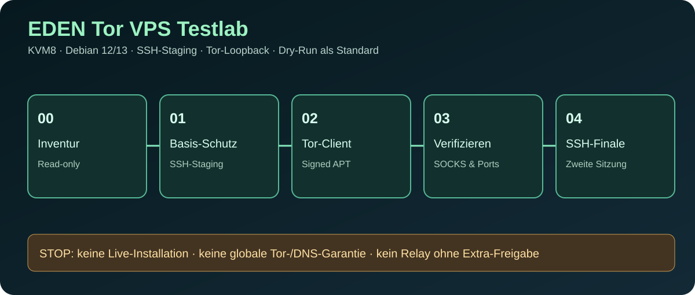

KVM8 · SYSTEM TESTLAB · NICHT PRODUKTIV
Tor VPS Testlab
Visualisierte, interaktive Planungsdemo für eine gehärtete Debian-Testumgebung. Die Bedienung verändert ausschließlich lokale Anzeigewerte – keine SSH-Verbindung, kein Paketdownload und keine Systemänderung.
Kein echter VPS verbunden. Eine grüne Planphase ist kein bestandener Server-, Tor- oder DNS-Leak-Test.

PHASE 00 / 04
Inventur
Zuerst CPU, OS-Version, SSH, Provider-Konsole und Snapshotstatus rein lesend ermitteln.
SIMULATION – UNVERIFIZIERT
Keine Daten vom echten KVM8-VPS vorhanden.